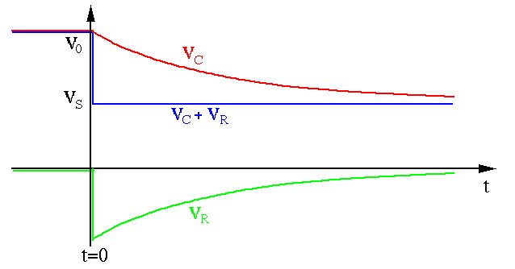
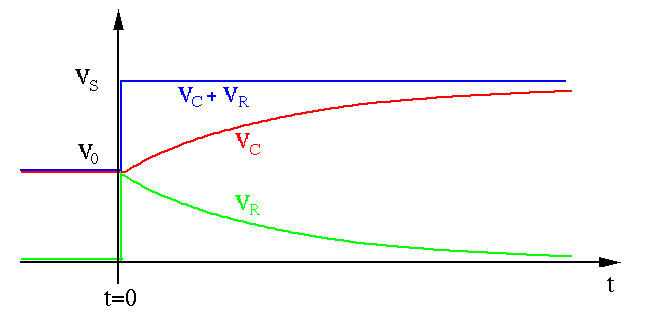
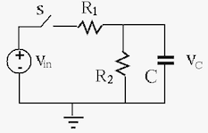
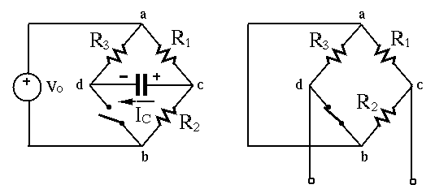

The complete response of a non-homogeneous linear system due to both
the external input and the initial condition can be found as the sum of
the homogeneous and particular solutions of the non-homogeneous DE with
a non-zero right-hand side for the external input:
Complete Solution Homogeneous SolutionParticular Solution Homogeneous SolutionParticular Solution |
(101) |
Specifically in the RC circuit, we have
We want to solve the DE for  as the circuit's complete response to the
input as well as the initial condition
, after a
switch is closed at time moment
as the circuit's complete response to the
input as well as the initial condition
, after a
switch is closed at time moment  .
.

Given an RC circuit shown above where the switch is closed at ,
we want to find the voltage across  and voltage
and voltage  across
across  as a function of time for
as a function of time for  .
.
First we consider a constant (DC) input applied to the circuit
at , i.e., a step input
The solution of this inhomogeneous DE is composed of two parts,
- Homogeneous solution (natural response) :
due to the initial condition
.
- Particular solution (forced response)
due to the DC input
 .
Or by phasor method, we can get
as
.
Or by phasor method, we can get
as  and
.
and
.
The complete solution is
The constant  can be determined from the initial condition
:
and the complete solution is
The same result can also be obtained using the
Laplace transform method.
can be determined from the initial condition
:
and the complete solution is
The same result can also be obtained using the
Laplace transform method.
In particular, if
, the solution is
The current through is
The voltage across is
We can further verify that
The plots below show (red) and (green) under different
initial conditions (purple) and inputs (blue).
- , , i.e.,

- , , i.e.,

Note that in the first case, after the switch is closed at ,
- takes a negative value if
for , although
the voltage source is positive (both measured with respective to
the bottom wire treated as the ground). This is because right after the
switch is closed, the voltage on the left side of drops from
to , causing the voltage on its right side to also drop
from 0 to , lower than the ground level of .
- Voltages on both sides of go through a discontinuous transition to
drop (case 1) or jump (case 2) by , however, the voltage
remains the same, as the voltage across does not change instantaneously.
drops from for to
at
, while
(left side of ) drops from
 to .
to .
In general, neither the voltage across a capacitor nor the current through
an inductor can be changed instantaneously as it takes time for them to
build up:
Therefore the capacitor can behave like a temporary voltage source, and,
similarly, an inductor can behave like a temporary current source.
Example 0 (homework): When an RC circuit with zero initial voltage
is charged by a DC voltage . Find energy is consumed
by and energy is stored in .
A Shortcut Method:
Observing the complete solution
obtained
above, we see that
- When ,
is the initial condition
- When
,
is the steady
state response.
We can therefore generalize the complete solution obtained above to all
first-order systems, i.e., their responses to a step input, a constant input
that is turned on at moment , always take the same form:
in terms of three essential components of the system's response:
- The steady state response : as discussed in previous
section for steady state response.
- The initial value :
Denote the value of immediately before and after the moment
by and , respectively. If
,
then use for ;
- The time constant of the system : When there is only one
resistor in the circuit, the time constant is
 or
or  .
When there are multiple resistors, the time constant can be found by:
.
When there are multiple resistors, the time constant can be found by:
- Remove or
 so that the rest of the circuit () is a
one port network.
so that the rest of the circuit () is a
one port network.
- Find the equivalent resistance of the network by turning off
all energy sources (short-circuit for voltage source, open-circuit
for current source).
- Find time constant or .
In particular, note that
- when ,
the initial condition;
- when
,
the steady state response;
- when
, the difference
between the initial
and the steady state values of the response decays exponentially. This term is
the transient response of the system.
Example 1:
,
,
.
Find .

- Find initial value .
- Find steady state value
:
- Find equivalent resistance :
- Find time constant
- Find the complete response
In particular,
Example 2:
In the circuit below,  ,
,
,
, the circuit is in steady state when . Find
after the switch is closed at .
,
,
,
, the circuit is in steady state when . Find
after the switch is closed at .

Consider node voltage method. Applying KCL to node  we get
we get
i.e.,
where
The initial condition for the DE above is
, the
homogeneous solution is
and the particular
(steady state) solution is
. The complete solution
is
To find , we evaluate at and equate that to the
known initial condition to get
i.e., . Now the solution is
Example 3:
Resolve the circuit above using the short-cut method:
Example 4:
In the same circuit above, find the voltages and
across and currents and through  and
and  ,
respectively.
,
respectively.
- Find
- Find and . Before , the circuit is in
steady state, i.e.,
. However, after
the switch closes at , the voltage at node d drops from
10V to 0V (with respect to node b as ground), and the voltage
at node c drops from 5V to -5V (voltage across a capacitor
cannot change instantaneously), i.e.,
and
;
- Find
(same as before);
- Find and :
We see that
.
- Find and through and :
- Find current through capacitor :
 |
(140) |
Note that when ,
, lower than ground voltage !